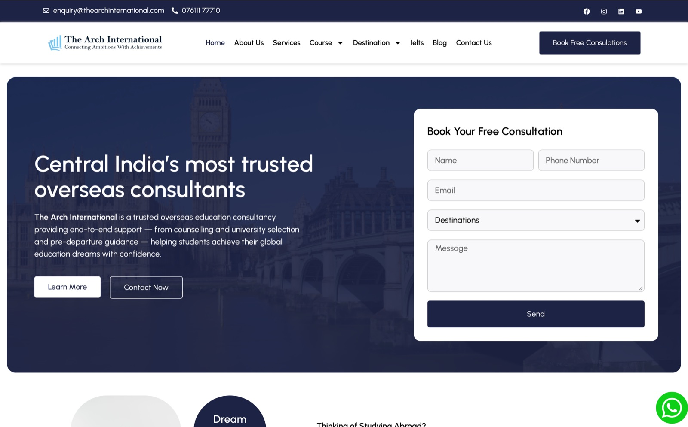

The Arch International
thearchinternational.comSole designer & developer
2025
WordPress · Elementor Pro
Full platform build

Challenge
An international organization needed its entire digital presence built from zero — no existing site to lean on, no design system, no content structure. Everything from information architecture to launch was on one pair of hands.
Thinking
Organizations like this live or die on clarity: a first-time visitor has to understand the mission, find the program they care about, and know how to act within one scroll. I architected the sitemap around those three motions before opening a page builder.
Build
Custom WordPress build with a consistent template system in Elementor Pro — global styles, reusable section patterns, mobile-first breakpoints. Performance was treated as a launch requirement, not an optimization phase.
Outcome
Shipped in 2025 and running since. The organization's team updates programs and pages themselves; I stay on for structural work — the handoff pattern working exactly as designed.
Lesson kept: the sitemap is the product. Everything after it is execution.